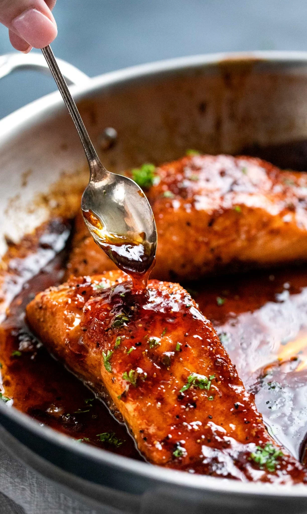

Honey Glazed Salmon

Descriptions
I think this recipe tastes best when made right before eating, but you can whisk together the sauce ahead of time if you’d like.
However, this salmon recipe also tastes amazing cold, on top of a salad. So if that’s your intention, then yes, make it a few hours to a day ahead of time
Ingrediants
Salmon
4 6 oz salmon filets
1/2 tsp kosher salt
1/2 tsp black pepper
1/2 tsp smoked paprika (or regular paprika)
1/4 tsp blackening seasoning (optional)
Sauce
3 Tbsp butter
2 tsp olive oil
6 cloves garlic minced
1/2 cup honey
3 Tbsp water
3 Tbsp soy sauce
1 Tbsp sirarcha sauce
2 Tbsp lemon juice
Steps:

- Pat salmon dry, then season with salt, pepper, paprika and blackening seasoning (if using). Set aside.
- IMPORTANT: Adjust oven rack to middle position, then preheat broiler. If you broil this with the rack up high the sauce will burn.
- Add butter and oil to a large, oven-safe skillet over MED-HIGH heat. Once butter is melted, add garlic, water, soy sauce, sriracha, honey and lemon juice and cook 30 seconds or so, until sauce is heated through.
- Add salmon, skin side down (if using salmon with skin), and cook 3 minutes. While salmon cooks, baste frequently with sauce from the pan by spooning it over the top of the salmon.
- Broil salmon for 5-6 minutes, basting with sauce once during the broil, until salmon is caramelized and cooked to desired doneness.
- Garnish with minced parsley if desired.